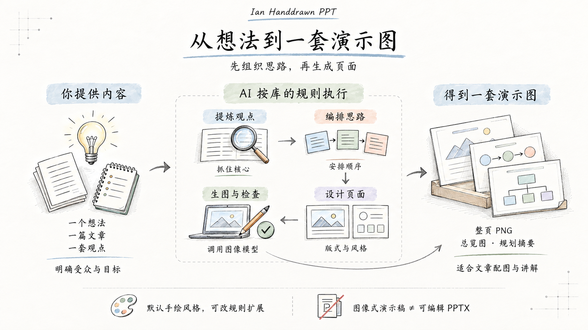

只能画成这一种吗？
默认只有这套风格，可修改规则进行扩展。原库没有内置多风格菜单。淡色手绘是它选定的视觉体系；其他风格需要更换参考图，并同步调整配色、线条、字体和提示词约束，再重新生成。
对比图、流程图、分类图属于不同版式，并不意味着使用了不同风格。
00 / THE BIG PICTURE
输入内容，AI 按库的规则组织思路，再生成符合讲述顺序、风格统一的页面图片。

本研究室的理解引导图 · 图中文字与关系已目视检查。原库提供工作规则，实际执行依赖 AI 与图像模型；可编辑 PPTX 需额外实现。
01 / ORIGINAL COLLECTION
主题：自动化的边界。观察同一风格怎样承载隐喻、对比、流程和判断。
原图来自 Ian（helloianneo）的公开仓库，保留原文件。此处展示原作，不代表本次重新生成。
02 / REAL-WORLD PRACTICE
给研究室的新协作者，讲清楚“怎样把一个开源项目整理成可复用的知识”。
把研究流程讲给新协作者
本仓库的介绍、收录与发布约定
1 张封面 + 3 张正文解释页
按原 Skill 的规划与风格规则，使用内置图像工具逐页生成；附原库参考图。不是原作者作品，也不是对原图的改字复用。
03 / STYLE, WORKFLOW & OUTPUT
当前展示的是一套默认手绘风格，用两组不同的内容验证效果。
默认只有这套风格，可修改规则进行扩展。原库没有内置多风格菜单。淡色手绘是它选定的视觉体系；其他风格需要更换参考图，并同步调整配色、线条、字体和提示词约束，再重新生成。
对比图、流程图、分类图属于不同版式，并不意味着使用了不同风格。
最终主要交付整页 PNG。先理解材料，提炼观点与叙事，再选择每页结构，按统一风格生成图片。标题、标签和插图通常一起生成，文字已经嵌入图片中。
只想整理内容时，也可以停在页面规划阶段，不调用生图。
本展厅保留了从素材到结果的过程。原作注明来源与作者，实作提供原始材料、每页主旨、版式、完整提示词，以及实际图片尺寸和制作记录。
这些说明由本展厅整理呈现；原库本身是一套指导 AI 工作的 Skill。
以下是能力范围说明，尚未实作的方向没有效果预览。
近白纸底、细线、淡色标签、大留白；本页全部 8 张作品沿用这套风格。
修改配色、画幅、文字密度或边框等规则。新增配置后需要重新生图并检查效果。
这是可探索的新方向，当前未实作。需替换风格参考，重写相关视觉规则与限制，效果取决于生图模型。
语义决定“画什么、怎么组织”，风格决定“看起来是什么样”。
读懂原文、受众与目标，保留核心观点和事实依据。
每页一个观点。步骤画流程，差异做对比，归类用分支。
统一视觉规则，逐页写明构图、图形关系和必需文字。
生成带字的整页 PNG，检查文字、关系和跨页一致性；不合格则返工。
页面 PNG ＋ 多页缩略总览 ＋ 简短规划摘要。也支持仅输出规划。
可编辑 PPTX、可单独修改的文字与图形、交互动画。PDF/PPTX 导出需要额外实现。
技术文章配图、概念教学、课程插图、产品流程讲解。
原库提供工作规则，执行依赖 AI 与图像工具。文字准确性和风格一致性仍需检查。当前页面是效果展厅，不提供在线生图。